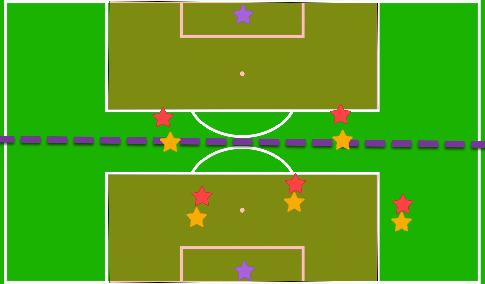

Our indoor sessions are all about having fun, but they're also an essential opportunity to build confidence. We encourage the girls to make the most of the many touches they’re getting—developing skills and gaining confidence along the way
Things to think aboutWe talked with the team about taking chances—giving yourself the opportunity to make mistakes, learn, and succeed. Here’s what we encourage:
We refer to the goalie box as the danger zone. In this danger zone, we should be so close to our player that we can reach out and grab their shirt.

On the indoor field, our half is practically the entire danger zone. We need to be in a constant mindset of staying within "shirt-grabbing" distance, ensuring that we are fully marked up in our defensive half. If the opposing team plays a defender up, it gives us a slight advantage; our top-position players can help while still keeping a vigilant eye on their defensive responsibilities.
What is a 50/50 ball, coach?
A "50/50 ball" refers to a loose ball on the field that is equally accessible to players from both teams, giving each an approximately equal chance of gaining control.
If individually we conquer anticipation and determination for a 50/50, this will elevate our team’s performance.
Creating a mentality of "my ball and no one else's ball" goes a long way.
What does this mean? It means to go at the ball and not slow down.
In a 50/50 situation, what does this do?